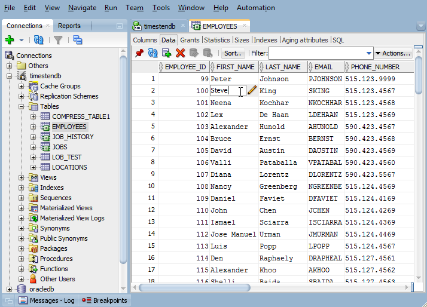
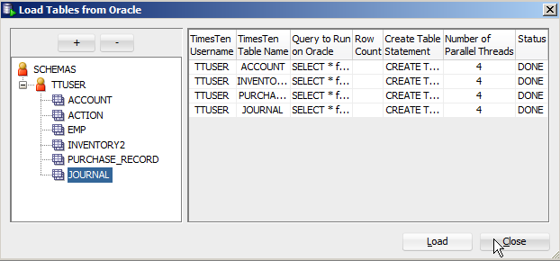
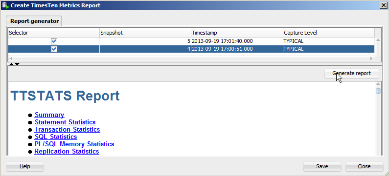
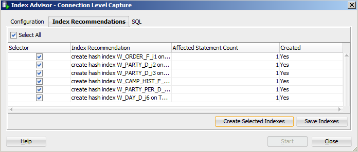
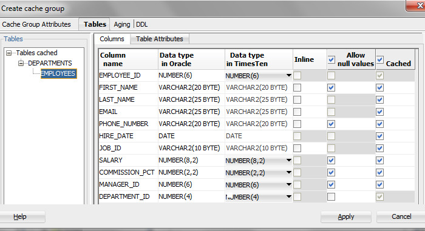
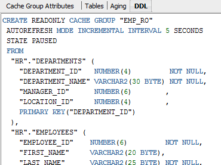

Oracle SQL Developer is a graphical tool that enhances productivity and simplifies development tasks for database application developers.
Using SQL Developer with TimesTen is similar to using SQL Developer with Oracle Database. Users navigate the database connections and objects in the tree-based object browser. TimesTen database users can browse, create and edit database objects, such as tables, views, indexes and PL/SQL subprograms, the same way as they do with Oracle Database. Refer to the Connections demo and the Basic Operations demo for more details.

TimesTen SQL Developer works seamlessly with TimesTen product functionality to simplify the use of many TimesTen utilities and built-in procedures for administrative tasks and performance tuning.
Loading Data into a TimesTen Table
To quickly copy a table definition and data from the Oracle Database to TimesTen is easy to do. TimesTen SQL Developer supports loading tables, views or the result set of a SQL query from the Oracle Database using the underlying TimesTen built-in procedure ttLoadFromOracle.
|  |
Refer to the Data Loading demo for more details.
Performance Metrics and Reporting
TimesTen collects a rich set of database performance metrics and statistics. Such information are maintained in the TimesTen System Tables. SQL Developer simplifies the tasks of retrieving performance metrics for a given workload. Follow the ttStats demo on how to generate TTSTATS report.

TimesTen Index Advisor
The TimesTen database engine was developed with a cost-based SQL optimizer for query performance. Thus, optimal query performance relies on having proper indexes. The TimesTen Index Advisor analyses and recommends indexes for a specific workload. SQL Developer simplifies the tasks of running the Index Advisor. See the Index Advisor demo for more details.

In-Memory Database Cache
For users who are using the In-Memery Database Cache product option to cache Oracle Database tables in a TimesTen database, SQL Developer simplifies the tasks of creating TimesTen cache groups by browsing the table schema in the Oracle Database to select the desired tables, columns, and rows. Administrative tasks such as populating cache group with initial dataset, attribute settings for data refresh intervals, data aging policies, etc. are intuitive and customizable using SQL Developer.
|  |  | |
Refer to the Create and Load Cache Group demo on how to set up a cache group.
With concurrent connections to both the TimesTen database and the Oracle Database, users can visually see cache data synchronization within SQL Developer. For read-write cache groups, updates to the cache tables in TimesTen are propagated to the Oracle Database; for Read-Only cache groups, updates to the Oracle Database tables are refreshed to the TimesTen cache tables. Refer to the Browse and Edit Cache Data demo for more details.
Summary
SQL Developer with TimesTen enables users to:
- Establish concurrent connections to TimesTen database and Oracle Database
- Browse, create, and edit database objects and PL/SQL subprograms
- Import and load data from the Oracle Database and from flat files
- Execute SQL and PL/SQL statements and scripts
- Create and configure cache groups for data caching from the Oracle Database
- Execute TimesTen utilities and built-in procedures, such as Index Advisor, TT_STATS, ttLoadFromOracle
- View and create reports
TimesTen and SQL Developer Demos
| Establishing Connections To a TimesTen database | This demo shows how to establish connections to theTimesTen database. |
| Basic Operations with TimesTen | This demo shows how to create a connection to a TimesTen database, how to execute SQL statements using the SQL worksheet; calling TimesTen built-in procedures and ttIsql commands; how to createtables and indexes; how to insert, edit and browse records using the Data Editor within SQL Developer |
| Loading Data From Oracle Database | This demo shows how to load data from the Oracle Database tables to TimesTen using the ttLoadFromOracle built-in procedure |
| TimesTen Index Advisor | This demo shows how to run the Index Advisor to analyses and recommends optimal indexes for a given workload |
| TimesTen Performance Metrics and Reporting | This demo shows how to capture performance snapshots and generate ttStats performance report for a given workload |
| Create and Load Cache Group | This demo shows how to create cache groups to cache Oracle database tables into a TimesTen cache database |
| Browse and Edit Cache Data | This demo shows how to view and edit data in a cache group and visually see the effect of automatic cache data synchronization; also how to use the PassThrough feature to enable modifications to the Oracle Database base table and the TimesTen-cached table. |
| Create and Run PL/SQL | This demo shows how to copy PL/SQL subprograms from an Oracle Database into a TimesTen cache database |
For the latest update of TimesTen SQL Developer release and functionality, please visit the TimesTen SQL Developer website.
You can download the latest SQL Developer here.